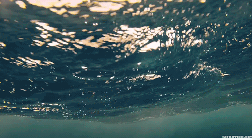
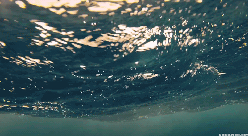

This project is inspired by ecards.
A blog post in 2007 is titled "Has the internet killed paper greeting card?" The author says that kids prefer sending ecards to writing on an actual piece of paper. In fact, one of the most popular online card sites in that time, someecards, is ranked among the top 200 websites in the world by Quantcast.
In 2018, a post in a BBS reads "Do ecards still exist anymore?"
Ecard is a trend that is a by-product in the rise of digital age.
The fact that it rose and fell so quickly, is indeed an indication of the very true nature of human beings'.
Regardless of the media, our desire of expression. To our beloved ones.
Maybe you can pick up a pen, or open up your email to write a note for your friend whom you have not seen in a while.


 
